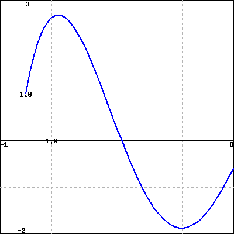

What is a partial sum of a geometric series? What is a simplified form of the \(n\)th partial sum of a geometric series?
Under what conditions does a geometric series converge? What is the sum of a convergent geometric series?
Many important sequences are generated by addition. In Preview Activity 8.2.1, we see an example of a sequence that is connected to a sum.
Preview Activity8.2.1.
Warfarin is an anticoagulant that prevents blood clotting; often it is prescribed to stroke victims in order to help ensure blood flow. The level of warfarin has to reach a certain concentration in the blood in order to be effective.
Suppose warfarin is taken by a particular patient in a 5 mg dose each day. The drug is absorbed by the body and some is excreted from the system between doses. Assume that at the end of a 24 hour period, 8% of the drug remains in the body. Let \(Q(n)\) be the amount (in mg) of warfarin in the body before the \((n+1)\)st dose of the drug is administered.
Explain why \(Q(1) = 5 \times 0.08\) mg.
Explain why \(Q(2) = (5+Q(1)) \times 0.08\) mg. Then show that
There is a pattern that you should see emerging. Use this pattern to find a formula for \(Q(n)\text{,}\) where \(n\) is an arbitrary positive integer.
Complete Table 8.2.1 with values of \(Q(n)\) for the provided \(n\)-values (reporting \(Q(n)\) to 10 decimal places). What appears to be happening to the sequence \(Q(n)\) as \(n\) increases?
Table8.2.1.Values of \(Q(n)\) for selected values of \(n\)
Therefore, the long-term level of Warfarin in the blood under these conditions is \(\frac{1}{2.3}\text{,}\) which is approximately 0.435 mg.
To determine the long-term effect of Warfarin, we considered a finite geometric series of \(n\) terms, and then considered what happened as \(n\) was allowed to grow without bound. In this sense, we were actually interested in an infinite geometric series (the result of letting \(n\) go to infinity in the finite sum).
Definition8.2.2.
An infinite geometric series is an infinite sum of the form
\begin{equation}
a + ar + ar^2 + \cdots = \sum_{n=0}^{\infty} ar^n\text{.}\tag{8.2.5}
\end{equation}
The value of \(r\) in the geometric series (8.2.5) is called the common ratio of the series because the ratio of the (\(n+1\))st term, \(ar^n\text{,}\) to the \(n\)th term, \(ar^{n-1}\text{,}\) is always \(r\text{:}\)
Geometric series are common in mathematics and arise naturally in many different situations. As a familiar example, suppose we want to write the number with repeating decimal expansion
This is an infinite geometric series with \(a=\frac{12}{100}\) and \(r = \frac{1}{100}\text{.}\)
By using the formula for the value of a finite geometric sum, we can also develop a formula for the value of an infinite geometric series. We explore this idea in the following activity.
Activity8.2.3.
Let \(r \ne 1\) and \(a\) be real numbers and let
\begin{equation*}
S = a+ar+ar^2 + \cdots ar^{n-1} + \cdots
\end{equation*}
be an infinite geometric series. For each positive integer \(n\text{,}\) let
What should we allow \(n\) to approach in order to have \(S_n\) approach \(S\text{?}\)
What is the value of \(\lim_{n \to \infty} r^n\) for \(|r| \gt 1\text{?}\) for \(|r| \lt 1\text{?}\) Explain.
If \(|r| \lt 1\text{,}\) use the formula for \(S_n\) and your observations in (a) and (b) to explain why \(S\) is finite and find a resulting formula for \(S\text{.}\)
If \(|r| \lt 1\text{,}\) then using the fact that \(S_n = a\frac{1-r^n}{1-r}\text{,}\) it follows that the sum \(S\) of the infinite geometric series (8.2.6) is
The formulas we have derived for an infinite geometric series and its partial sum have assumed we begin indexing the sums at \(n=0\text{.}\) If instead we have a sum that does not begin at \(n=0\text{,}\) we can factor out common terms and use the established formulas. This process is illustrated in the examples in this activity.
Remove the common factor of \(ar^3\) from each term and find the sum of the series.
Finally, we consider the most general case. Let \(a\) and \(r\) be real numbers with \(-1\lt r\lt 1\text{,}\) let \(n\) be a positive integer, and consider the sum
Initially, the calculator shows a left Riemann sum with \(n=5\) subintervals for the function \(f(x)=2x+1\) on the interval \([1,4]\text{.}\) Use the applet to compute the following sums for this function on this interval.
\(L_5 =\) , \(M_5 =\) , \(R_5 =\)
\(L_{25} =\) , \(M_{25} =\) , \(R_{25} =\)
\(L_{100} =\) , \(M_{100} =\) , \(R_{100} =\)
Now use basic geometry to determine the exact area bounded by \(f(x)=2x+1\) and the \(x\)-axis on the interval \([1,4]\text{.}\)
Exact Area =
Make a note of any patterns you observe.
Now update the calculator to consider the function \(f(x)=x^2+1\) on the same interval. Compute the following Riemann sums.
\(L_5 =\) , \(M_5 =\) , \(R_5 =\)
\(L_{25} =\) , \(M_{25} =\) , \(R_{25} =\)
\(L_{100} =\) , \(M_{100} =\) , \(R_{100} =\)
Note that the graph isn’t a familiar geometric shape, so you can’t use a geometric formula to calculate the exact area bounded by \(f(x)=x^2+1\) and the \(x\)-axis on the interval \([1,4]\text{.}\)
However, you can observe any patterns you see in the calculations above, and make an educated guess of the exact area bounded by \(f(x)=x^2+1\) and the \(x\)-axis on the interval \([1,4]\text{.}\)
Exact Area =
2.A geometric series.
Use the following figure, which shows a graph of \(f(x)\) to find each of the indicated integrals.

(Click on the graph for a larger version.)
Note that the first area (with vertical, red shading) is 39 and the second (with oblique, black shading) is 13.
A.\(\int_a^b f(x) dx =\)
B.\(\int_b^c f(x) dx =\)
C.\(\int_a^c f(x) dx =\)
D.\(\int_a^c |f(x)| dx =\)
3.A series that is not geometric.
Use the graph of \(f(x)\) shown below to find the following integrals.
(Click on the graph for a larger version.)
A.\(\int_{-5}^0 f(x) dx =\)
B. If the vertical red shaded area in the graph has area \(A\text{,}\) estimate: \(\int_{-5}^{7} f(x) dx =\)
(Your estimate may be written in terms of \(A\text{.}\))
4.Two sums of geometric sequences.
Find the average value of \(f(x)=8 x + 4\) over \([2,6]\)
average value =
5.
There is an old question that is often used to introduce the power of geometric growth. Here is one version. Suppose you are hired for a one month (30 days, working every day) job and are given two options to be paid.
Option 1.
You can be paid $500 per day or
Option 2.
You can be paid 1 cent the first day, 2 cents the second day, 4 cents the third day, 8 cents the fourth day, and so on, doubling the amount you are paid each day.
How much will you be paid for the job in total under Option 1?
Complete Table 8.2.3 to determine the pay you will receive under Option 2 for the first 10 days.
Table8.2.3.Option 2 payments
Day
Pay on this day
Total amount paid to date
\(1\)
\(\dollar0.01\)
\(\dollar0.01\)
\(2\)
\(\dollar0.02\)
\(\dollar0.03\)
\(3\)
\(4\)
\(5\)
\(6\)
\(7\)
\(8\)
\(9\)
\(10\)
Find a formula for the amount paid on day \(n\text{,}\) as well as for the total amount paid by day \(n\text{.}\) Use this formula to determine which option (1 or 2) you should take.
6.
Suppose you drop a golf ball onto a hard surface from a height \(h\text{.}\) The collision with the ground causes the ball to lose energy and so it will not bounce back to its original height. The ball will then fall again to the ground, bounce back up, and continue. Assume that at each bounce the ball rises back to a height \(\frac{3}{4}\) of the height from which it dropped. Let \(h_n\) be the height of the ball on the \(n\)th bounce, with \(h_0 = h\text{.}\) In this exercise we will determine the distance traveled by the ball and the time it takes to travel that distance.
Determine a formula for \(h_1\) in terms of \(h\text{.}\)
Determine a formula for \(h_2\) in terms of \(h\text{.}\)
Determine a formula for \(h_3\) in terms of \(h\text{.}\)
Determine a formula for \(h_n\) in terms of \(h\text{.}\)
Write an infinite series that represents the total distance traveled by the ball. Then determine the sum of this series.
Next, let’s determine the total amount of time the ball is in the air.
When the ball is dropped from a height \(H\text{,}\) if we assume the only force acting on it is the acceleration due to gravity, then the height of the ball at time \(t\) is given by
\begin{equation*}
H - \frac{1}{2}gt^2\text{.}
\end{equation*}
Use this formula to determine the time it takes for the ball to hit the ground after being dropped from height \(H\text{.}\)
Use your work in the preceding item, along with that in (a)-(e) above to determine the total amount of time the ball is in the air.
7.
Suppose you play a game with a friend that involves rolling a standard six-sided die. Before a player can participate in the game, he or she must roll a six with the die. Assume that you roll first and that you and your friend take alternate rolls. In this exercise we will determine the probability that you roll the first six.
Explain why the probability of rolling a six on any single roll (including your first turn) is \(\frac{1}{6}\text{.}\)
If you don’t roll a six on your first turn, then in order for you to roll the first six on your second turn, both you and your friend had to fail to roll a six on your first turns, and then you had to succeed in rolling a six on your second turn. Explain why the probability of this event is
that you to roll the first six on your third turn.
The probability of you rolling the first six is the probability that you roll the first six on your first turn plus the probability that you roll the first six on your second turn plus the probability that your roll the first six on your third turn, and so on. Explain why this probability is
Find the sum of this series and determine the probability that you roll the first six.
8.
The goal of a federal government stimulus package is to positively affect the economy. Economists and politicians quote numbers like “\(k\) million jobs and a net stimulus to the economy of \(n\) billion of dollars.” Where do they get these numbers? Let’s consider one aspect of a stimulus package: tax cuts. Economists understand that tax cuts or rebates can result in long-term spending that is many times the amount of the rebate. For example, assume that for a typical person, 75% of her entire income is spent (that is, put back into the economy). Further, assume the government provides a tax cut or rebate that totals \(P\) dollars for each person.
The tax cut of \(P\) dollars is income for its recipient. How much of this tax cut will be spent?
In this simple model, we will say that the spent portion of the tax cut/rebate from part (a) then becomes income for another person who, in turn, spends 75% of this income. After this ``second round" of spent income, how many total dollars have been added to the economy as a result of the original tax cut/rebate?
This second round of spending becomes income for another group who spend 75% of this income, and so on. In economics this is called the multiplier effect. Explain why an original tax cut/rebate of \(P\) dollars will result in multiplied spending of
Based on these assumptions, how much stimulus will a 200 billion dollar tax cut/rebate to consumers add to the economy, assuming consumer spending remains consistent forever.
9.
Like stimulus packages, home mortgages and foreclosures also impact the economy. A problem for many borrowers is the adjustable rate mortgage, in which the interest rate can change (and usually increases) over the duration of the loan, causing the monthly payments to increase beyond the ability of the borrower to pay. Most financial analysts recommend fixed rate loans, ones for which the monthly payments remain constant throughout the term of the loan. In this exercise we will analyze fixed rate loans.
When most people buy a large ticket item like car or a house, they have to take out a loan to make the purchase. The loan is paid back in monthly installments until the entire amount of the loan, plus interest, is paid. With a loan, we borrow money, say \(P\) dollars (called the principal), and pay off the loan at an interest rate of \(r\)%. To pay back the loan we make regular monthly payments, some of which goes to pay off the principal and some of which is charged as interest. In most cases, the interest is computed based on the amount of principal that remains at the beginning of the month. We assume a fixed rate loan, that is one in which we make a constant monthly payment \(M\) on our loan, beginning in the original month of the loan.
Suppose you want to buy a house. You have a certain amount of money saved to make a down payment, and you will borrow the rest to pay for the house. Of course, for the privilege of loaning you the money, the bank will charge you interest on this loan, so the amount you pay back to the bank is more than the amount you borrow. In fact, the amount you ultimately pay depends on three things: the amount you borrow (called the principal), the interest rate, and the length of time you have to pay off the loan plus interest (called the duration of the loan). For this example, we assume that the interest rate is fixed at \(r\)%.
To pay off the loan, each month you make a payment of the same amount (called installments). Suppose we borrow \(P\) dollars (our principal) and pay off the loan at an interest rate of \(r\)% with regular monthly installment payments of \(M\) dollars. So in month 1 of the loan, before we make any payments, our principal is \(P\) dollars. Our goal in this exercise is to find a formula that relates these three parameters to the time duration of the loan.
We are charged interest every month at an annual rate of \(r\)%, so each month we pay \(\frac{r}{12}\)% interest on the principal that remains. Given that the original principal is \(P\) dollars, we will pay \(\left(\frac{0.0r}{12}\right)P\) dollars in interest on our first payment. Since we paid \(M\) dollars in total for our first payment, the remainder of the payment (\(M-\left(\frac{r}{12}\right)P\)) goes to pay down the principal. So the principal remaining after the first payment (let’s call it \(P_1\)) is the original principal minus what we paid on the principal, or
\begin{equation*}
P_1 = P - \left( M - \left(\frac{r}{12}\right)P\right) = \left(1 + \frac{r}{12}\right)P - M\text{.}
\end{equation*}
As long as \(P_1\) is positive, we still have to keep making payments to pay off the loan.
Recall that the amount of interest we pay each time depends on the principal that remains. How much interest, in terms of \(P_1\) and \(r\text{,}\) do we pay in the second installment?
How much of our second monthly installment goes to pay off the principal? What is the principal \(P_2\text{,}\) or the balance of the loan, that we still have to pay off after making the second installment of the loan? Write your response in the form \(P_2 = ( \ )P_1 - ( \ )M\text{,}\) where you fill in the parentheses.
Show that \(P_2 = \left(1 + \frac{r}{12}\right)^2P - \left[1 + \left(1+\frac{r}{12}\right)\right] M\text{.}\)
Let \(P_3\) be the amount of principal that remains after the third installment. Show that
This is a rather complicated formula and one that is difficult to use. However, we can simplify the sum if we recognize part of it as a partial sum of a geometric series. Find a formula for the sum
and then a general formula for \(P_n\) that does not involve a sum.
It is usually more convenient to write our formula for \(P_n\) in terms of years rather than months. Show that \(P(t)\text{,}\) the principal remaining after \(t\) years, can be written as
Now that we have analyzed the general loan situation, we apply formula (8.2.9) to an actual loan. Suppose we charge $1,000 on a credit card for holiday expenses. If our credit card charges 20% interest and we pay only the minimum payment of $25 each month, how long will it take us to pay off the $1,000 charge? How much in total will we have paid on this $1,000 charge? How much total interest will we pay on this loan?
Now we consider larger loans, e.g., automobile loans or mortgages, in which we borrow a specified amount of money over a specified period of time. In this situation, we need to determine the amount of the monthly payment we need to make to pay off the loan in the specified amount of time. In this situation, we need to find the monthly payment \(M\) that will take our outstanding principal to \(0\) in the specified amount of time. To do so, we want to know the value of \(M\) that makes \(P(t) = 0\) in formula (8.2.9). If we set \(P(t) = 0\) and solve for \(M\text{,}\) it follows that
\begin{equation*}
M = \frac{rP \left(1+\frac{r}{12}\right)^{12t}}{12\left(\left(1+\frac{r}{12}\right)^{12t} - 1 \right)}\text{.}
\end{equation*}
Suppose we want to borrow $15,000 to buy a car. We take out a 5 year loan at 6.25%. What will our monthly payments be? How much in total will we have paid for this $15,000 car? How much total interest will we pay on this loan?
Suppose you charge your books for winter semester on your credit card. The total charge comes to $525. If your credit card has an interest rate of 18% and you pay $20 per month on the card, how long will it take before you pay off this debt? How much total interest will you pay?
Say you need to borrow $100,000 to buy a house. You have several options on the loan:
30 years at 6.5%
25 years at 7.5%
15 years at 8.25%.
What are the monthly payments for each loan?
Which mortgage is ultimately the best deal (assuming you can afford the monthly payments)? In other words, for which loan do you pay the least amount of total interest?